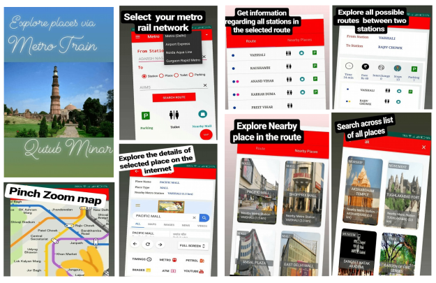
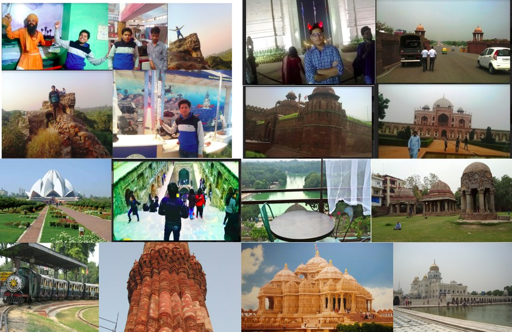
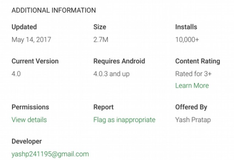

<div style="width: 500px; overflow: hidden; font-size: small;">
    <div >
        <h2>Delhi Metro Traveller</h2>
        Delhi Metro Traveller helps you to find all relevant paths and fare between two stations with nearby
        tourist attractions, malls, parking and toilets.
        <br><br>
        <style>
        table, th, td {
            border: 1px solid black;
            border-collapse: collapse;
            padding:3px;
            border-color: lightgray;
        }
        </style>
        <table style="width:90%;border: 1px solid; font-size: small;">
        <tr><td>DMRC Playstore</td><td><a target="_blank" href="https://play.google.com/store/apps/details?id=com.yash.dmrc">playstore</a></td></tr>
        <tr><td>DMRC Code (Android) </td><td><a target="_blank" href="https://github.com/yashp241195/DelhiMetro">dmrc-app-code</a></td></tr>
        <tr><td>DMRC FareCollector (SeleniumPy) </td><td> <a target="_blank" href="https://github.com/yashp241195/FareCollectorSeleniumPy">fare-collector-seleniumPy</a></td></tr>
        </table>
        <br>
        <b>Tech Stack</b> : Graph algorithms, Android, SQLite, SeleniumPy
        <br><br>
        
        <br>
        <h3>Features:</h3>
        1. Select the metro network between Delhi, Noida (Aqua Line), Airport Express line and Gurugram Rapid Express Metro.
        <br>2. Find all relevant routes between two stations.
        <br>3. Search Toilets and Parking from a given selected stations.
        <br>4. Web Browser utility to search across tourist places and nearby malls.
        <br>5. Metro Map.
        <br><br>
        Failed to convert it into an UBER of travel agent as the cost of hiring a travel agent > the cost of travel
        itself in the Indian geographical context. Market earlier version of this app to 10,000 user base in 2-3
        months but lost it due to key store issues. Created algorithms to find out various metro train paths,
        routes, nearby washroom efficiently using combination of depth limit search and Dijkstra in graph.
        <br>
        <h3>Motivation</h3>
        I wish to create a journey planner app which can plan tour for me from a given starting point in a way that I don't have to worry about anything while traveling. 
        I started visiting tourist places of Delhi via metro train in 2nd year of my college as it was very easy, convenient and cheap and I don't need permission from my 
        parents to travel as I can return home the same day. 
        <br><br>
        
        <br><br>
        The travel structure is similar even if we visit some different city, there is always a need of place 
        to stay within the city where we can return at the end of the day.
        <br><br>
        While travelling, I found few problems like no information about nearby toilets, parking within metro app and also no information about nearby tourist places, shopping malls, 
        restaurants etc near particular metro station. 
        <br><br>
        What will happen if I create a journey planner which suggest me step by step like where to go in what sequence so that I can eat good food, always found parking and toilets in 
        the routes for making journey super convenient irrespective of mode of travel. I realised that if I am able to create such thing then I will be able to fulfil my dream to become 
        traveller who travelled across 192 countries with the help of money earned from ads in app. I built that app in Jan 2017 (3rd year-6th semester and it took me 2 months), I had no 
        idea about how business works and no idea about how engineering works also no idea about the amount of technical expertise and investment required to create such thing and also 
        no idea about the potential revenue it can bring if implemented properly as I was a naive 13 year old teenager girl who got some freedom to travel in her own city and nearby but 
        still I manage to think like what should I need to do in order to improve the reach of my app so I thought of creating Delhi metro app with features like train routes, nearby toilets, 
        parking and places to visit and also embed the web browser and buttons to search other important things.
        <br>
        <br>
        <b>Marketing Timeline :</b>
        <br>
        <br>100 - 1 week
        <br>1,000 - 3 weeks
        <br>10,000 - 2 months
        <br><br>
        
        <br>
        <br>
        <h3>Learning Outcomes</h3>
        <div>
        <br>  1. If I dont know about Shah Jahan I will get no real exprience or essence of Lal Quila even after
        staying inside the Quila (Fort) for years. It made me realised all human experiences happens
        within through senses and richness of experience depends upon my connection with associated
        story about the place. Travelling to 192 countries is not fulfilling if done without purpose.
        <br><br>  2. I really wish to finish this app but no matter what I did there was always something to add or
        modify. After developing the app for 12 times within 3 years (irregularly). I investigated
        everywhere and found pager is complete (no one is evolving it further) but it is also not useful
        and realised every complete thing is also labelled as dead or not useful which lead to the
        realisation of the fundamental truth "Nothing complete only evolves". Everything we label as
        useful is going through constant evolution and even the dumbest idea could be evolved into a
        great billion dollar idea if one possess strong fundamental knowledge about economy,
        philosophy and human behaviour. It is not about what could be done but it is more about what
        you can do or contribute. The right question was not "how to finish this app" but to ask "how
        to maintain it's it relevancy". Asking the right questions is the paramount or above everything in
        order to accomplish anything.
        <br><br>  3. People can give you any kind of feedback, you can't take it personally. It is impossible to take
        the absolute right decision the only thing you can do is to figure out the more right available for
        your product with your knowledge. The real question is "Is your knowledge able to produce
        impact at the given time". Pager made it's impact at it's time but not relevant right now so your
        domain knowledge need to be upto date if you wish to create something impactful.


        </div>
        <br>
        
    </div>
</div>